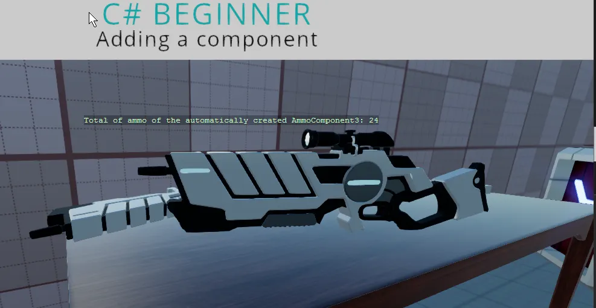

Adding a component
You can find this sample in the tutorial project: Menu → Adding a component
Explanation
This C# Beginner tutorial covers how to add and remove components.
In the previous tutorial we learned how we can retrieve components that are already attached to an entity through the editor. This tutorial shows that we can accomplish the same thing by code.
We can add the same component several times to the same entity. We also learn how to remove all of components of the same type again.

Code
AmmoComponent
This is the AmmoComponent. We will not attach it to the entity in the editor. Instead we will add it ourselves in the AddingAComponent script.
using Stride.Engine;
namespace CSharpBeginner.Code
{
/// <summary>
/// This script is used in combination with the GettingAComponent.cs script
/// </summary>
public class AmmoComponent : StartupScript
{
private readonly int maxBullets = 30;
private readonly int currentBullets = 12;
public override void Start() { }
public int GetRemainingAmmo()
{
return maxBullets - currentBullets;
}
}
}
Adding A Component
This component script, will add the AmmoComponent script to the entity. We then add another component (of the same type) before we remove all components of that type.
Finally we learn how to automatically create a component, attach it to the entity and get a reference all in 1 line of code. This only works if the entity doesn't have any components of the given attached yet.
using Stride.Core.Mathematics;
using Stride.Engine;
namespace CSharpBeginner.Code
{
/// <summary>
/// This script demonstrates how to add a component to an entiy.
/// We also learn a way to automically create and attach a component to our entity.
/// <para>
/// https://doc.stride3d.net/latest/en/tutorials/csharpbeginner/add-component.html
/// </para>
/// </summary>
public class AddingAComponentDemo : SyncScript
{
private AmmoComponent ammoComponent1;
private AmmoComponent ammoComponent2;
private AmmoComponent ammoComponent3;
public override void Start()
{
// We can add a new component to an entity using the 'Add' method.
ammoComponent1 = new AmmoComponent();
Entity.Add(ammoComponent1);
// We can even add the component a second time
ammoComponent2 = new AmmoComponent();
Entity.Add(ammoComponent2);
// Lets remove all components of type AmmoComponent
Entity.RemoveAll<AmmoComponent>();
// When there is no AmmoComponent of attached, but we like there to be one, we can create it automatically
// NOTE: when a component is created this way,
// the 'Start' method of the AmmoComponent will be called after this script's Update method has executed
ammoComponent3 = Entity.GetOrCreate<AmmoComponent>();
}
public override void Update()
{
DebugText.Print("Remaining ammo: " + ammoComponent3.GetRemainingAmmo().ToString(), new Int2(440, 200));
}
}
}